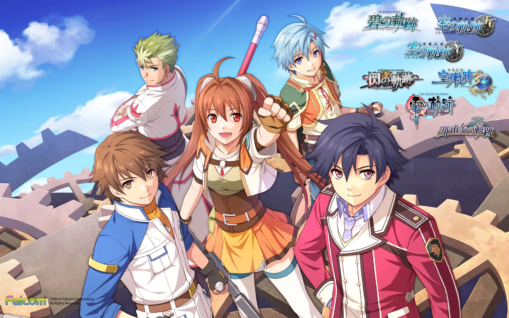

Trails/Kiseki - ¿Que es?
Trails (Kiseki en japón) es una saga de videojuegos JRPG de fantasía/scifi que comparten el mismo mundo y, aunque cada juego tiene sus tramas individuales, entre todos forman una gran historia. Es una de las sagas de videojuegos más ambiciosas en lo que a historia se refiere; tiene un mundo muy detallado y arcos de trama y personajes que se desarrollan a lo largo de múltiples juegos. Al igual que otras grandes sagas como One Piece o el Cosmere, requiere bastante tiempo y dedicación, cosa que no es para todo el mundo, pero si se le da una oportunidad, a la larga merece totalmente la pena.
¿De que va Trails, exactamente?
Trails sucede en el continente ficticio de Zemuria, un lugar donde se encuentran múltiples países. Hay reinos, una república, un imperio…

Hace pocas décadas ha comenzado la revolución orbal; donde se descubrió el uso de orbes –piedras casi mágicas que permiten hacer cosas extraordinarias– y han hecho que la tecnología avance a una velocidad vertiginosa. Esencialmente, en cuestión de pocas décadas, este mundo ha pasado de estar en la edad media a tener tecnología que se acerca bastante a nuestra actualidad, o incluso mejor. Los juegos, entre otras cosas, exploran las consecuencias que tienen estos cambios en la sociedad.
Cada arco sucede mayormente en un país, y sigue a un grupo diferente de personajes. Normalmente personas que en un principio lidian con problemas locales, hasta que se ven envueltos en eventos mucho mayores. El hecho de que sucedan en diferentes países no quiere decir que cuando terminéis un arco os tengáis que despedir de todos esos personajes y lugares para siempre. Es el mismo mundo, después de todo. Nunca se sabe a quién os podéis encontrar por ahí…
El mundo de Trails está lleno de vida. Si os tomáis el tiempo para hablar con los NPCs, veréis que siempre tienen algo que decir; ya sea sobre su vida o sobre los eventos que están sucediendo en el momento. Está todo muy cuidado a pequeña escala, pero también a gran escala. Desde el primer juego ya hay menciones a territorios externos y su política que tendrán relevancia muchos juegos más adelante.
Arcos y juegos que conforman Trails
Voy a dar una explicación breve de cada arco, para que sepáis un poco dónde os estáis metiendo. Creo que tener algo de información siempre es preferible a enfrentarse a una masa abstracta de juegos de los que no se sabe nada. De todas formas, si queréis ir totalmente en blanco, adelante. Abajo tenéis una lista de todos los juegos en orden.

Arco de Liberl
-Trails in the Sky FC (First Chapter)
-Trails in the Sky SC (Second Chapter)
-Trails in the Sky the 3rd
Arco de Crossbell
-Trails from Zero
-Trails to Azure
Arco de Erebonia
-Trails of Cold Steel
-Trails of Cold Steel II
-Trails of Cold Steel III
-Trails of Cold Steel IV
-Trails into Reverie
Arco de Calvard
-Kuro no Kiseki (aún no tiene nombre en occidente, probablemente Trails in the Dark)
-Kuro no Kiseki II: Crimson Sin
-Si no actualizo esta lista, podéis consultar los futuros juegos en Wikipedia.
Este arco sucede en el Reino de Liberl, un lugar donde la tecnología Orbal ha permitido una gran cantidad de avances tecnológicos –las aeronaves están normalizadas como transporte general. Sin embargo, aún tiene cicatrices de una guerra que hubo hace una década, cuando el imperio de Erebonia intentó invadir Liberl.
En este juego seguimos a Estelle Bright (una de las mejores protagonistas de un videojuego, imo), una chica jovial y energética, y a su hermano adoptivo Joshua, en su viaje para convertirse en Bracers profesionales.
Los Bracers son una organización no gubernamental que se encarga de mantener la paz y proteger y ayudar a los ciudadanos, ya sea defendiéndolos de monstruos aterradores o encontrando un gato perdido.
Sí que debo avisar que el primer juego en concreto es una aventura bastante sencilla (que no por ello menos buena). Hay momentos donde se empiezan a entrever las complejidades mayores de esta saga, pero principalmente el juego sigue el viaje de Estelle y Joshua por todo Liberl, donde van conociendo a gente nueva y resolviendo problemas locales. Es un juego muy majo que captura muy bien el espíritu de la aventura. No esperéis la trama más compleja del mundo de entrada.
Gráficamente es antiguo y deja un poco que desear, pero tiene su encanto. Liberl es un lugar muy agradable, y sus habitantes, en concreto los personajes secundarios son bastante memorables (que nadie os engañe, Olivier el bardo es el verdadero protagonista de Trails.)
Como he dicho, si Sky no os convence hay otros juegos de Trails que igual son mejores puntos de inicio para vosotros, aunque si pensáis jugar la saga más allá de vuestro primer arco, definitivamente es muy recomendable que juguéis esta trilogía en algún momento.
>Sky FC suele estar a 8€ en rebajas. Muy rentable para lo que dura, y un precio bastante razonable para probar la franquicia si aún estáis indecisos.
Una cosa a tener en cuenta de la trilogía Sky es que no es exactamente una trilogía, en el sentido clásico de la palabra. FC y SC cubren casi toda la “trama” principal del arco, mientras que Trails in the Sky the 3rd actúa como una especie de epílogo del arco de Sky, a la vez que se dedica a plantar tramas que serán importantes en futuros juegos. Es un juego bastante diferente y muy interesante, pero algo controversial.
En lugar de ser una aventura viajando por el mundo, como los otros, es una especie de mazmorra gigante que te recompensa con escenas sobre la vida de los personajes y el mundo (sé que suena raro pero os prometo que dentro del juego tiene sentido). Las escenas que tiene merecen totalmente la pena, algunas son vitales para la saga a la larga, pero eso, que entre una y otra toca bastante mazmorreo. Para algunas personas es uno de los mejores juegos de Trails y a otros les ha costado un poco pasarselo. No lo digo a malas ni nada, simplemente aviso para que vayáis mentalizados.
Tengo un par de apuntes más sobre Sky the 3rd pero las dejo para el último apartado, el de aclaraciones, que ahora no son inmediatamente relevantes. Vamos al siguiente arco.

El segundo arco de Trails es lo que conocemos como la duología Crossbell. Crossbell es una ciudad-estado situada entre el Imperio de Erebonia y la República de Calvard, dos grandes potencias que están interesadas en reclamar Crossbell como parte de su territorio, lo que lleva a un ambiente muy tenso en la ciudad.
El protagonista de este arco es Lloyd Bannings, un detective de policía que ha sido asignado a un departamento creado recientemente, dedicado a ayudar al ciudadano de a pie. Junto con su nuevo equipo de excéntricos personajes, deberán demostrar la importancia de su departamento y desentrañar los secretos más oscuros de la ciudad…
>Me gusta la premisa, ¿Puedo empezar por aquí? – No es lo ideal. Aunque los protagonistas de este arco son nuevos, y técnicamente la trama se puede seguir bien, hay ciertas subtramas que provienen directamente de Sky y si no se han jugado a esos juegos pierden todo su peso. Por poder podéis, pero si tenéis pensado jugar al resto de la saga, mejor hacerlo en orden.
>Crossbell y el inicio del arco de Erebonia - Los dos juegos de Crossbell suceden de manera simultánea a los dos primeros juegos del siguiente arco; Trails of Cold Steel I y II. Esto implica que, dado que están en el mismo mundo y los sucesos son relevantes de uno al otro, se spoilean mutuamente. Especialmente Crossbell a Cold Steel. Sigo recomendando jugar todo en orden, pero si queréis, podéis jugar los dos primeros de Cold Steel antes de Crossbell (o el primero, para evitar mayormente los spoilers de Crossbell). Eso sí, de ninguna manera recomiendo jugar a Cold Steel III sin haber terminado Crossbell.

Este arco sucede principalmente en el Imperio de Erebonia. A pesar de ser una de las naciones más poderosas del continente, vasta en territorios y con una enorme potencia militar, actualmente se encuentra en una época de inestabilidad política. Un conflicto de clases, cada vez más tenso, pone en duda el futuro del imperio.
El juego sigue a Rean Schwarzer, un nuevo alumno de una academia militar, que es asignado a una clase especial, formada por alumnos de diversos trasfondos y clases sociales, que serán parte de un nuevo experimento del imperio y se encontrarán en un primer año lleno de eventos inesperados
Es el primer arco de Trails que está completamente en 3D. Aunque es originalmente de la PSVita, así que no es particularmente impresionante, pero sin duda está más cerca de los estándares modernos que los juegos anteriores. Gran parte del primer juego transcurre en la escuela, y esto lleva a algunos tropos típicos de animes romcom estudiantiles que pueden echar un poco hacia atrás, pero bueno, por lo demás mantiene muchas de las virtudes de Trails, y pule varias de las mecánicas.
>Cold Steel I y II como punto de inicio a la franquicia - Los dos primeros Cold Steel no son un mal punto de inicio, de hecho están diseñados para ello. Su historia, de momento, no depende tanto de juegos anteriores y las referencias son eso, referencias. Si no os convence del todo Sky y queréis probar la franquicia con un juego más moderno, podéis empezar aquí. He visto a bastante gente que hizo eso; no llegaron a pasarse Sky, probaron Cold Steel, les enganchó a la saga y ya siendo fans de la historia volvieron a probar Sky y les fue mucho más fácil jugarlo. Eso sí, jugad solo a Cold Steel I y II, porque…
>Cold Steel III y IV son una especie de clímax de la saga, donde muchas tramas convergen. Es conveniente haber jugado a todos los juegos anteriores antes de jugar a esos dos. Si no, sería un poco como ver Avengers Infinity War habiendo visto solo las películas en las que sale Iron Man; en líneas generales te enteras de lo que está pasando, pero te pierdes la importancia de muchos momentos.
Trails into Reverie, de manera similar a Trails in the Sky the 3rd, actúa de epílogo de todos los arcos anteriores (especialmente la duología Crossbell y los Cold Steel), y plantea ciertas tramas de cara a futuros juegos. Aunque no se aleja tanto de la fórmula general de la saga como lo hacía Sky the 3rd. Hay gente que lo clasifica fuera del arco de Erebonia, pero lo pongo aquí por simplicidad. Con esto, hemos terminado como mínimo la primera mitad de la saga (y la mayoría de juegos que están disponibles en este momento).
Juegos: Kuro no Kiseki, Kuro no Kiseki II (sin nombre oficial en occidente, pero seguramente será algo como Trails before Dawn, o Trails in the Dark)
Estos juegos aún no han sido localizados así que no tengo mucho que decir, solo lo que he oído de gente que sí que los ha jugado. Ocurren en la República de Calvard y su protagonista es Van Arkride, una especie de detective/cazarrecompensas.
-Explora temas morales algo más grises que sus predecesores
-Tiene un nuevo sistema de combate de acción, que se puede alternar instantáneamente con el sistema de combate por turnos clásico. Permite bastante versatilidad y hace más divertido pelear contra los monstruos más comunes.
-De manera similar a Crossbell, tiene subtramas que dependen de cosas presentadas en juegos anteriores, así que no es un punto tan ideal de inicio. Aunque con lo bien que se habla de él, el nuevo sistema de combate y los gráficos más modernos, parece muy apetecible, tanto para fans antiguos como nuevos. Habrá que ver el resto del arco.
Donde jugar a Trails
Todos los juegos son eventualmente traducidos al inglés (aunque tardan un tiempo en hacerlo). La plataforma en la que se pueden jugar a todos ahora mismo es el PC. Alternativamente se puede usar una combinación de PC (no tiene por que ser muy potente, los juegos que están únicamente en PC son muy antiguos) y PS4/5. También hay juegos sueltos en otras consolas, como la Nintendo Switch.
>Esta lista está hecha en Abril de 2023. Es posible que estos datos cambien.
Arco de Liberl
Trails in the Sky (FC, SC y the 3rd) - PC
-Hay una remasterización de todos estos juegos para PSVita con el subtítulo de “Evolution”, aunque solo ha salido en japón. El arte y la música han sido rehechas y se han añadido voces. Personalmente no soy muy fan; el arte es sin duda más moderno, pero en mi opinión (y la de mucha más gente) pierde personalidad. Igual con la música; algunas canciones mejoran con las nuevas versiones pero otras no tanto. Y los openings nuevos se pasan con los spoilers. De todas formas si os interesa, hay mods por ahí que añaden estos assets a la versión de PC. Sé que al menos las voces (en japonés) a mucha gente le interesa tenerlas.
Arco de Crossbell
Trails from Zero/to Azure - PC, PS4/5 y Nintendo Switch
Arco de Erebonia
Trails of Cold Steel I y II - PC, PSVita, PS3, PS4/5
Trails of Cold Steel III y IV - PC, PS4/5, Nintendo Switch
Trails Into Reverie - PC, PS4/5, Nintendo Switch (Julio 2023)
Arco de Calvard
Kuro no Kiseki (I y II) - aún no se ha anunciado localización, pero cuando salga probablemente sea para PC, PS4/5
The Legend of Nayuta: Boundless Trails
Nayuta es un caso extraño del que hablaré más adelante. Saldrá para PC, PS4/5 y Nintendo Switch en algún momento de 2023
Otras aclaracines, en caso de que estéis considerando seriamente jugar a los juegos
Gameplay, dificultad y modos de juego
-Como videojuegos, el gameplay consiste principalmente en caminar por el mundo y hablar con gente, además de combates por turnos, ya sea contra monstruos u otros personajes. Si de ninguna manera os gusta el combate por turnos igual la saga no es para vosotros, pero si tenéis dudas, os animo a probarlo. Mi experiencia personal de combate con turnos antes de empezar esta saga era bastante escasa; había jugado a pokémon de pequeño y más recientemente Dungeons & Dragons, y aun así me he adaptado bastante rápido a él. Es muy buen sistema. Está balanceado pero es flexible. Puedes hacer ataques físicos, usar magia, habilidades o objetos, y puedes moverte por el terreno. No sé, ta bien.
-De todas formas si de verdad os interesa la historia pero tenéis miedo de que se os vaya a hacer muy difícil el combate, la mayoría de los juegos tienen un “modo fácil”, donde se reduce mucho la dificultad de los combates. El primer juego no lo tiene de por sí, pero tiene el “retry offset” (que está activado por defecto). Esto lo que hace es que cuando se pierde un combate, el siguiente intento reduce la dificultad. Yo personalmente los juego en normal. No me disgusta el combate, y no me importa tener un reto de vez en cuando, pero mi interés principal es la historia.
-Los gráficos no son el fuerte de la saga. Estos juegos pueden ser muchas cosas, pero visualmente impresionantes no es una de ellas. Pero el resto de cosas lo compensan. La música, por ejemplo, está muy bien.
-Como he dicho antes, si queréis jugarlos de manera legal, tienen buenos precios en rebajas (aunque no tan bajos como el primero). En Steam, y también en páginas como Humble Bundle o GOG, son rebajados frecuentemente. Solo hay que estar atentos. También comentar que de un juego a otro se pueden transferir ciertos datos de tu partida, así que no los desinstaleis inmediatamente.
-Las versiones de PC, PS4, PS5 y Switch tienen botón turbo, que acelera las animaciones de caminar por el campo y las animaciones en batalla. Sed conscientes de que existe. Las animaciones son muy lentas y a la larga pueden hacer los juegos un poco tediosos, y esto lo soluciona. No dudéis en usarlo; ahorra muchísimo tiempo y no tiene ningún efecto negativo en la experiencia, todo lo contrario. Normalmente en PC es la tecla alt, aunque podéis configurarlo.
"No quiero perderme nada de la historia."
-El diálogo de los NPCs cambia con cada evento relativamente importante que ocurre en la historia. No suelen tener ningún efecto mecánico, pero muchos tienen sus propias historias que contar y es muy divertido verles evolucionar, adónde les lleva la vida a lo largo del juego (o juegos). No digo que habléis con todos los NPCs todas las veces que les cambie el diálogo (que si queréis sí, yo lo hago), pero está bien darse un paseo y hablar con la gente de vez en cuando. Encontrarse con un NPC que ha viajado a otra región o incluso otro país y reconocerle y ver cómo le ha cambiado la vida es muy satisfactorio.
-Todos los juegos tienen misiones opcionales bastante variadas. No tenéis por qué hacerlas, pero tienen mini historias bastante divertidas y combates adicionales, si os interesa eso. En la mayoría de juegos se os informa de su existencia en tableros, pero también hay misiones opcionales secretas que no están avisadas en ningún sitio – están por ahí pero no sabréis que hay que hacerlas hasta que os topéis con ellas. Si sois el tipo de persona que le gusta hacer todas las misiones, vais a tener que explorar todo muy a conciencia o (mucho más sencillo) consultar una guía para aseguraros de que no os estéis saltando ninguna misión secreta.
-Debido a que estos juegos tienen una historia interconectada tan compleja, la manera en la que se juega la historia es bastante directa. No hay mucha libertad para cambiar la historia, ni grandes variaciones. Sin embargo, hay momentos donde vais a podéis elegir qué personajes queréis tener en el grupo, o eventos sociales donde elegis hablar con ciertos personajes y estrechar su amistad. Hay muchas escenas que varían, dependiendo de quién esté con vosotros o con quién os llevéis mejor. En general no son cambios muy importantes, pero sí que hay ciertas escenas que tienen relevancia para un personaje en concreto y no vais a ver su mejor versión a no ser que ese personaje esté en vuestro grupo, o reunáis las condiciones para activar ese evento. Si creéis que os habéis perdido alguna y queréis ver cómo era, no dudéis en buscarlas en Youtube u otros sitios donde podáis ver/leer un walkthrough.
-Dentro de los juegos existen libros que se pueden leer. Se van consiguiendo capítulo a capítulo a lo largo del juego. Si queréis leerlos pero se os pasa un capítulo no os preocupéis, están todos en la wiki.
-Mucho cuidado al consultar la wiki. Id solo a lo que buscáis y no miréis nada más, por muy irrelevante que parezca. Es muy fácil toparse con spoilers.
>Respecto a Trails in the Sky the 3rd – el juego mayormente sucede en otra dimensión, en la que se encuentran puertas que llevan a recuerdos de diversos personajes. Estas puertas son opcionales, pero en ellas hay cosas que debatiblemente son incluso más importantes que la historia principal del juego. Así que recomiendo que, si los personajes y/o el worldbuilding son cosas que os gustan de Trails, no os saltéis ninguna puerta.
-Si queréis una guía de estas puertas, lo podéis consultar en la wiki.
>Para ver la puerta estrella 14 te pide haber completado todas las otras puertas, pero de las puertas sol (los minijuegos) basta con haber completado sólo la primera fase.
-Última cosa sobre las puertas, creo que es conveniente que avise de que la puerta estrella número 15 tiene contenido bastante delicado. No entro en detalles por spoilers, pero deja implícitas cosas bastante duras y entiendo que pueda dejar a alguien con mal cuerpo, sobre todo si os pilla desprevenidos. Así que eso, tenedlo en cuenta.
-Segundo recordatorio, no olvidéis que existe el botón turbo.
"Contenido Adicional"
-Los juegos cuentan las partes más importantes de la historia, pero hay un puñado de cosas extra (manga, dramas de audio e incluso una serie de anime). No son necesarios para entender los juegos, pero sí que son canon –rellenan algunos huecos en la historia y dan las perspectivas de otros personajes. Algunos usan conceptos que se iban a meter en los juegos pero no se pudo por una razón u otra. Os dejo una lista de los más importantes y en qué momento de la historia podéis leerlos/verlos.
Después de Trails in the Sky the 3rd
-Loewe Monogatari/The tale of Loewe (manga): Manga que sigue los eventos de Trails in the Sky desde el punto de vista de cierto personaje llamado Loewe.
-Trails in the Sky Drama CD - Advanced Chapter: Nada esencial en la historia, pero tiene momentos cute entre los personajes de Trails in the Sky. Sucede tiempo después del tercer juego. Traducción fan del guión.
-Trails from Zero pre-story - The Ring of Judgement (manga): Manga corto donde seguimos a dos personajes conocidos y que actúa como precuela a Trails From Zero.
Después de Trails From Zero
-Trails to Azure Drama CD - Road to the Future: Cubre el periodo de tiempo entre Zero y Azure. Traducción fan del guión.
En algún punto del capítulo 4 de Trails of Cold Steel I
-Trails of Cold Steel - Link of Hearts Case A.R. (manga corto)
Después del capítulo 6 de Trails of Cold Steel I
-Trails of Cold Steel Drama CD - Returning Home: Historia que ocurre entre el capítulo 6 y el capítulo final. Traducción oficial del guión.
Después de la intermisión entre los actos I y II de Trails of Cold Steel II.
-Trails of Cold Steel II Drama CD - The Remote Town of Alster: Traducción oficial del guión.
Después de Trails of Cold Steel II.
-Trails of Cold Steel: Northern War es una serie anime que trata ciertos eventos ocurridos entre Trails of Cold Steel II y III, principalmente desde el punto de vista de personajes de North Ambria, país con un panorama político muy inestable que está en tensión con el imperio. Disponible en Crunchyroll.
The Legend Of Nayuta: Boundless Trails
Técnicamente es parte de la franquicia Trails. Es un JRPG de acción ambientado en lo que parece ser otro continente diferente a Zemuria. Hay ciertas referencias que indican que podría estar en el mismo mundo de Trails, pero los desarrolladores no han confirmado nada. De momento la actitud del fandom es que no se lo tiene muy en cuenta como parte de la saga y no parece ser canon, pero podría serlo si quisiesen. El hecho de que lo hayan localizado en inglés antes que otros juegos ha hecho a algunos fans sospechar que igual es más importante de lo que parece. De todas formas parece que como juego, por su cuenta, es bastante divertido, así que si queréis jugarlo por si acaso, no lo dudéis. Este juego salió tras Trails to Azure.
Aclaraciones finales
-Trails es en técnicamente parte de la serie The Legend of Heroes (de ahí que salga en la mayoría de los títulos). De hecho, Trails in the Sky es técnicamente The Legend of Heroes VI (precedido por la dulogía Dragon Slayer y la trilogía Gagharv). Pero todos esos juegos anteriores suceden en otro mundo; no están para nada relacionados con la historia de los Trails (salvo easter eggs puntuales), así que no hay que preocuparse de ellos. Simplemente lo menciono por si lo veis en algún sitio que no os extrañe.
-Por último, pero no menos importante, no olvidéis el botón turbo.